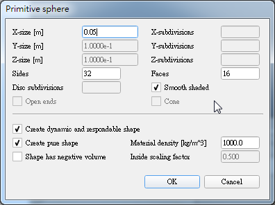
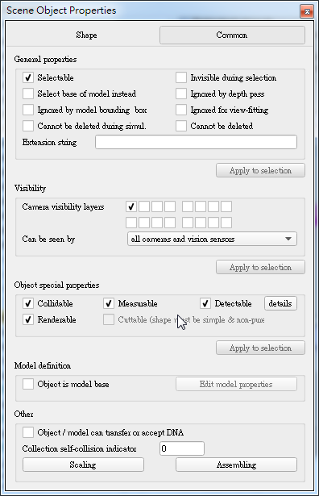
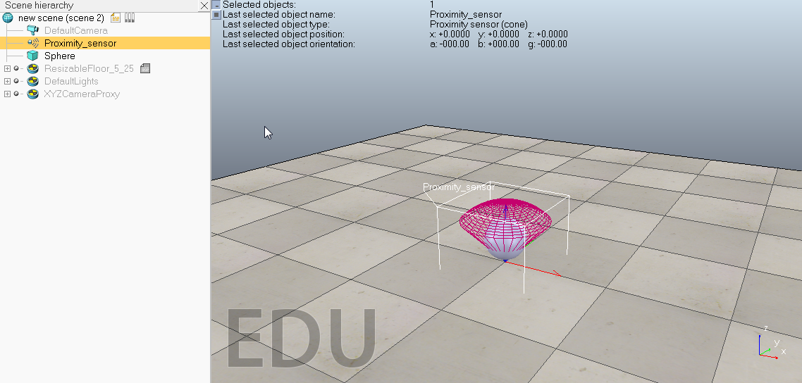
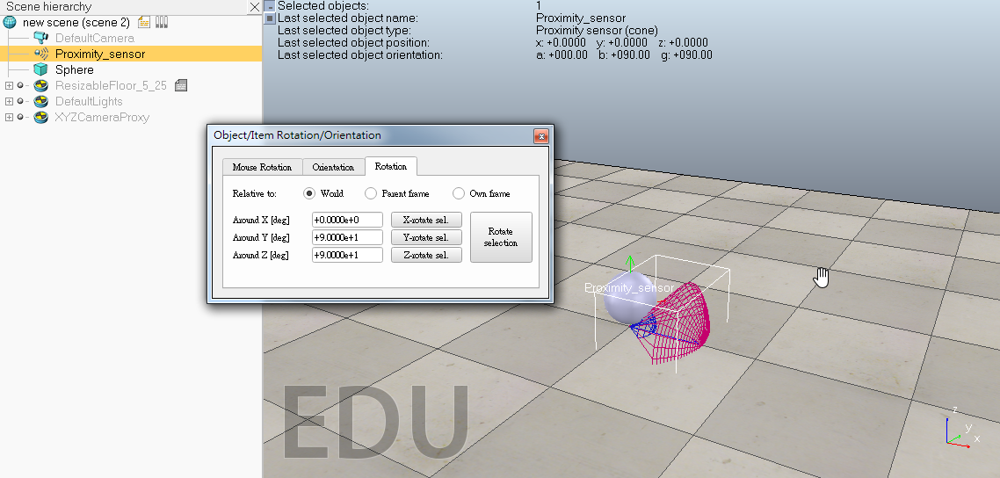
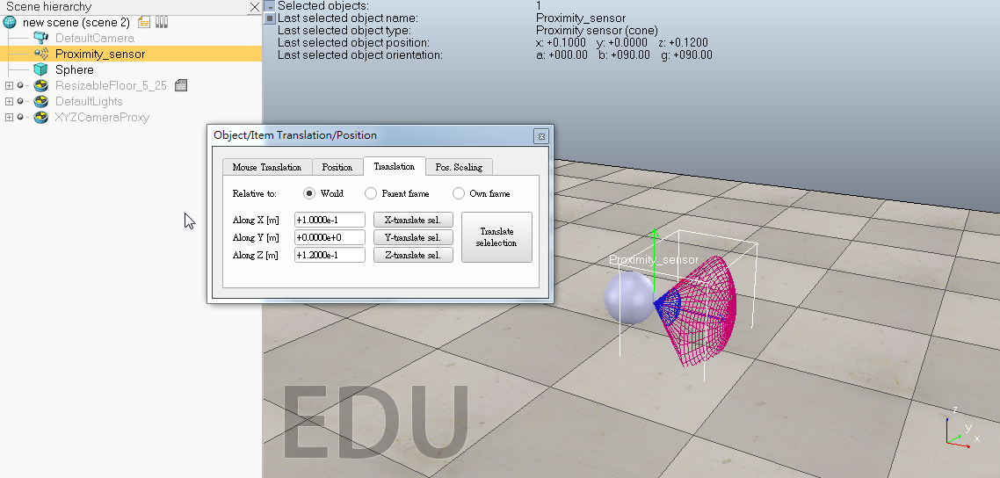
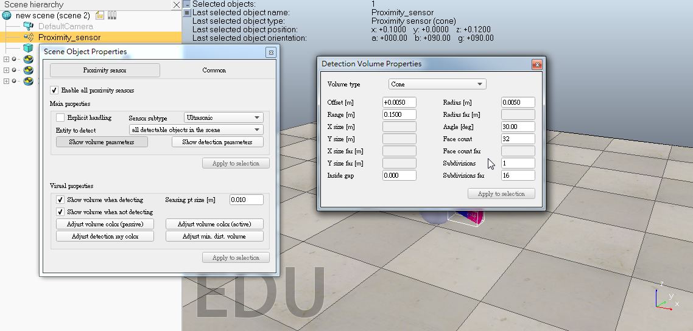
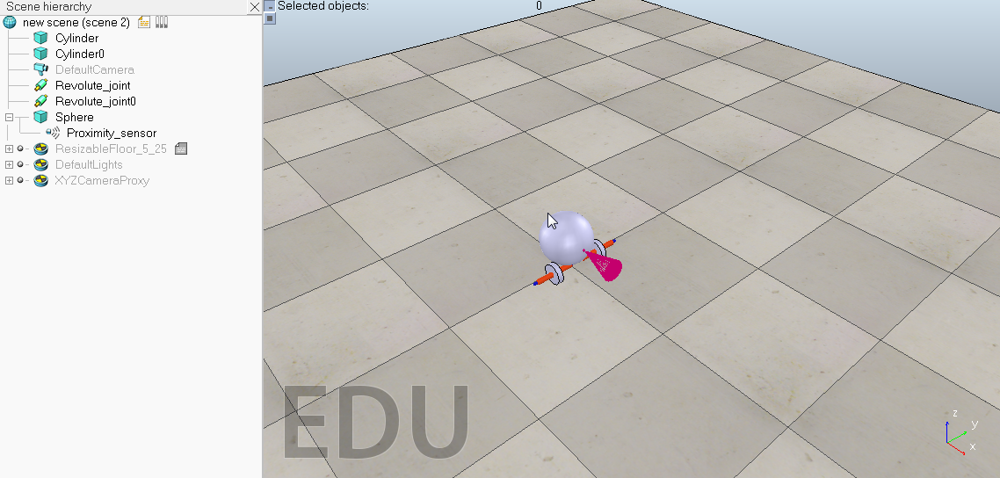
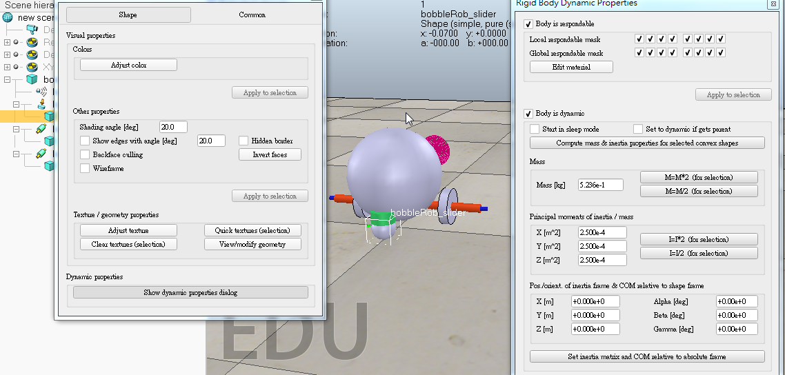
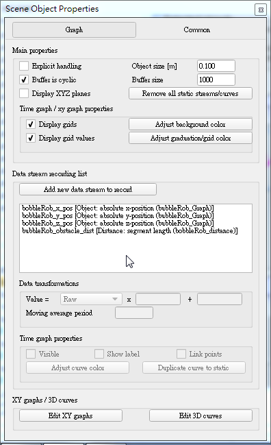
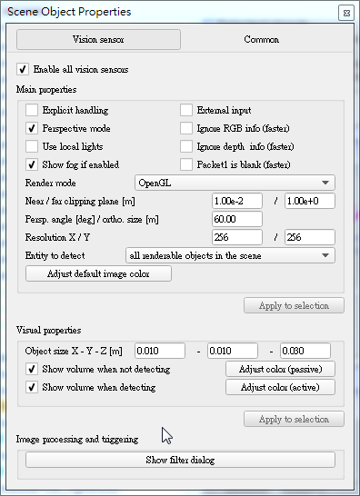

bobbleRob製作
1. 創建 [Menu bar --> Add --> Primitive shape --> Sphere] 新增直徑為 0.2 m 的球體，雙擊球體，打開編輯視窗，將Collidable, Measurable, Renderable and Detectable 選項勾選


2. 點選球體，移動球體位置，到translation，在Z軸上打上 0.02，Relative to 在World 後，點Translate selection，球體就會往上到適合的位置

3. [Menu bar --> Add --> Proximity sensor --> Cone type] 新增距離感測器，在旋轉視窗，在Y.Z軸打上90度，再來在位置視窗，在X及Z軸輸入0.1及0.12將感測器對準球體中心



4. 雙擊感測器進入編輯視窗，點擊Show volume parameter按鈕，輸入: Offset : 0.005 Angle : 30 Range : 0.15 點擊Show detection parameters，取消Don't allow detections if distance smaller than

5. [Menu bar --> Add --> Primitive shape --> cylinder] 新增一個（0.08,0.08,0.02）的圓柱體當作輪子，點選圓柱將Collidable, Measurable, Renderable and Detectable 選項勾選，之後更改絕對位置及絕對方向 ( 0.05 , 0.1 ,0.04 )，更改完複製一個將絕對位置Y座標設 -0.1，再來做馬達 [Menu bar --> Add --> Joint --> Revolute]，選擇的馬達再案shift鍵選擇左輪，在位置視窗點 Apply to selection ，在旋轉視窗點 Apply to selection ，右輪也照著上一個步驟

6. 新增一個直徑0.05的球，讓它有 Collidable，Measurable，Renderable和Detectable ，[Menu bar --> Add --> Force sensor] 增加一個力傳感器並向上移動0.05，與球連接起來，並沿X軸移動 -0.07連接本體

7. [Menu bar --> Tools --> Collections] ，點Add new collection ，選擇新的集合項目為bubbleRob，點選Add ，並改名為 bubbleRob_collection

8. [Menu bar --> Tools --> Calculation module properties]，點Add new distance object，選擇新的集合項目bubbleRob_collection，重命名為bubbleRob_distance

9. [Menu bar --> Add --> Graph]，改名為 "bubbleRob_graph"，將graph拉到bubbleRob底下並設定graph的位置再 ( 0，0，0.005 )，點擊 bubbleRob_graph，取消 "Display XYZ-planes"然後點 Add new data stream to record ， Data stream type : absolute x-position Object / item to record : bubbleRob_graph，Y與 Z做法一樣，

10. 點 Edit 3D curves，再點 Add new curve，在對話框哩，如下設定 :
X-value : bubbleRob_x_pos
Y-value : bubbleRob_y_pos
Z-value : bubbleRob_z_pos
點選下面的 Relative to world 並設定 Curve width 為 4
11. [Menu bar --> Add --> Vision sensor --> Perspective type] 打開 vision sensor ，將position and orientation 設置為 (0,0,0)，將 Far clipping plane 設為1，Resolution X / Y 設為 256 / 256 ，再來選擇 Show filter dialog，點 Edge detection on work image 再來點 Add filter 來新增，並按旁邊向上的箭頭使它到中間，然後雙擊改 Threshold = 0.2

12. 在 scene 上 右鍵 add floating view ，然後在浮動視窗上面 選 view > Associate view with selected vision sensor ，並小腳本圖標，複製以下代碼貼到腳本

手足球圖檔 << Previous Next >> 個人操作影片